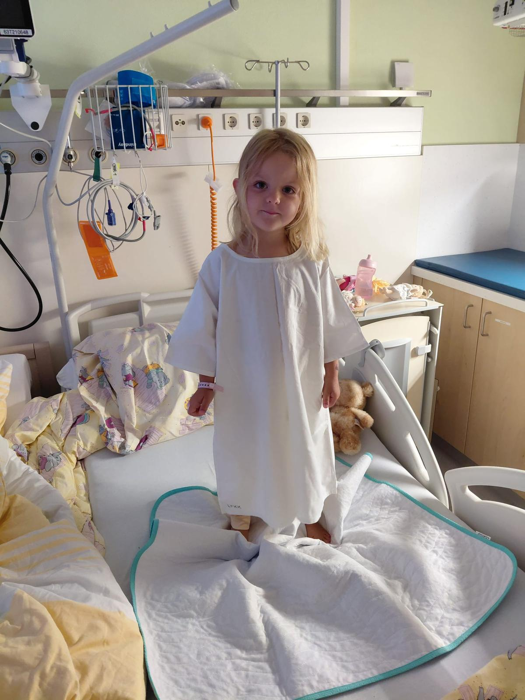
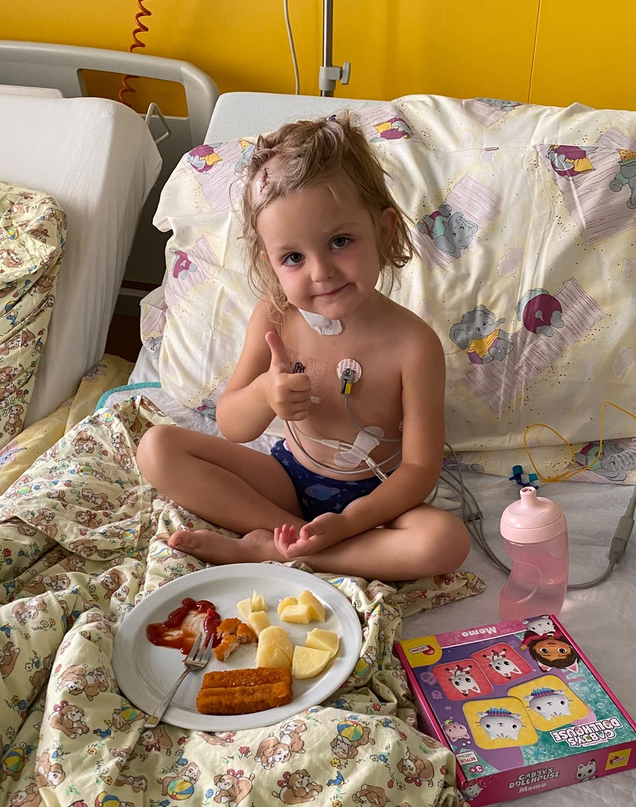

Alles begann mit Kopfschmerzen und Erbrechen über einige Tage hinweg – Symptome, die zunächst harmlos wirkten. Nur eine Woche später zeigte ein MRT des Gehirns die schreckliche und vollkommen überraschende Wahrheit: Bei Sophie wurde ein Atypischer Teratoider Rhabdoidtumor (AT/RT) diagnostiziert – einer der seltensten und aggressivsten Hirntumoren. Eine Diagnose, die keine Familie je hören möchte, und mit der die meisten Menschen noch nie in Berührung gekommen sind. Etwa ein Lotto 6er im negativen Sinne, da er nur ca. 1% der Gehirntumoren bei Kleinkindern ausmacht und in Deutschland pro Jahr nur ca. 10 - 22 Kinder betroffen sind.
Der Tumor wurde zwei Wochen nach der Diagnose operativ entfernt, und Sophie hat die Operation am Gehirn tapfer überstanden. Aber das ist erst der Anfang eines langen Weges: In den kommenden Monaten steht ihr eine intensive Chemotherapie kombiniert mit Bestrahlung bevor, um im Körper verbliebene Krebszellen zu zerstören und eine nachhaltige Heilung zu ermöglichen.


So erschütternd diese Diagnose ist – wir geben die Hoffnung nicht auf.
Wir klammern uns an jeden Grund, der für Sophie spricht. Und davon gibt es einige: Der Tumor wurde früh entdeckt, konnte vollständig entfernt werden, und Sophie wird nach dem bestmöglichen Konzept behandelt, das die moderne Medizin für diesen seltenen und aggressiven Tumor kennt. Vor allem aber kämpft Sophie selbst – jeden einzelnen Tag, mit einem Mut und einer Lebensfreude, die uns alle sprachlos machen.